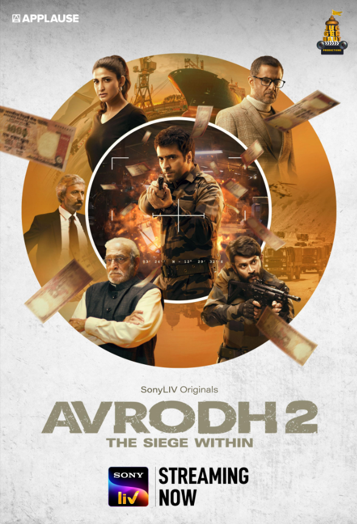

Avrodh: The Siege Within (2020 - 2022)
• Genre : Action | Drama | Thriller | War
• Languages : Hindi
• Creator : Raj Acharya
• ⭐ IMDb : 7.8
• Seasons : 2
• Episodes : 17
• Status : Completed
• Release Date : 31 July 2020
• About : Inspired by real events, Avrodh follows the planning and execution of India's surgical strikes after the Uri terrorist attack. The series showcases the courage of Indian soldiers, intelligence operations, strategic planning, and the sacrifices made to protect the nation.